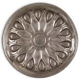
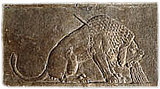
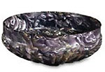
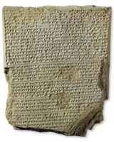
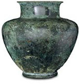

| |
Research by our
curators and other scholars helps a continuing reassessment and reinterpretation
of the collections. The growth of the collections through judicious
acquisition is a crucial element in this process. This includes groups
of material acquired from excavations as well as individual objects
varying from the everyday to the spectacular. Particular care is paid
to ensuring that these have secure provenances.
The most important
new acquisitions are placed on exhibition wherever possible; the others
maintain significance as part of the study collection. This particularly
applies to groups of pottery and other archaeological material excavated
by or on behalf of the Museum in those countries that permit export.
Such reference collections are often the most accessible of their type
to be held in perpetuity. Important acquisitions made over the past
decade are highlighted on the following pages.
Artaxerxes
Bowl
The Dying Lion
The Higham Bowl
New Light on Monotheism
Commemorating a Hero
Artaxerxes
Bowl
Contemporary written sources, depictions in ancient art, excavated discoveries
and chance finds illustrate the richness of court life in the Persian
Empire. One of the most abundant surviving categories is that of Achaemenid
silver, found in graves and hoards across the Empire. The British Museum
has one of the finest collections of Achaemenid metalwork, ranging from
the Oxus
Treasure to over a dozen silver vessels. One of these, acquired
in 1994, is one of four identical silver bowls inscribed with the name
and titles of the Persian king Artaxerxes I (465-425 BC). The companion
vessels are in the Metropolitan Museum of Art, the Freer Gallery of
Art in Washington and the Reza Abbasi collection in Tehran. They are
said to have been found together during the early 1930s at the ancient
city-site of Ecbatana (modern Hamadan) in western Iran. The bowl is
decorated with a stylized pattern of alternating lotus buds and petals
radiating from the centre of the bowl. This type of decoration is also
found on uninscribed silver and bronze bowls dating between the 6th
and 4th centuries BC. Analysis within the British Museum's Department
of Scientific Research indicates that it was hammered from a single
piece of very pure silver; the high silver value helps explain why this
fine bowl had been treasured in antiquity.
The bowl was purchased
with the assistance of the National Art Collections Fund, The British
Museum Friends and the Friends of the Ancient Near East. For more information
see the COMPASS article about the Artaxerxes
Bowl.

The
Dying Lion
This small
fragment of a large stone relief is one of the most famous examples
of Late Assyrian art. It dates from the reign of King Ashurbanipal (668-627
BC) and was discovered during the 1850s in his palace at Nineveh. This
building, the so-called North Palace, was discovered by Hormuzd Rassam
who excavated it on behalf of the Trustees of the British Museum from
1853-54. During the subsequent year excavations were resumed by William
Kennet Loftus, assisted by the artist William Boutcher, who made a series
of very fine drawings of the reliefs. These included a series of fragmentary
reliefs in Room S that showed a royal lion hunt and which had apparently
fallen from an upper storey. Other more intact scenes showing similar
lion hunts survived on the lower storey of the palace. Boutcher's drawing
of this particular relief was published, as was an early photograph
of the piece, but the whereabouts and even the size of this sculpture
remained uncertain until William Boutcher's granddaughter, Miss Lilian
Boutcher, generously presented the sculpture to the Museum in 1992.
For more information see the COMPASS article about the Dying
Lion.
The
Higham bowl
Rome's relations with its eastern neighbours veered from costly wars
to regulated trade. One account, known as The Periplus of the Erythraean
Sea and probably dating from the 1st century AD, describes in detail
the ports and traded commodities of the Red Sea, Indian Ocean and Persian
Gulf. Archaeological surveys and excavations have added valuable information
about some of these sites and confirm the existence of a flourishing
maritime trade during this period. The island of Bahrain - then known
as Tylos - was a particularly important partner in the Gulf trade. Excavated
burial mounds provide evidence for blue-glazed jars and flasks imported
from Mesopotamia as well as occasional glass containers.
This ribbed glass
bowl belongs to a Roman type known as a pillar-moulded bowl. It was
excavated by Captain Higham in Grave 36 at Shakhoura, near the village
of the same name in the northern part of Bahrain. Although other glass
bowls of this shape have been excavated in the Gulf, Mesopotamia and
as far east as Afghanistan, these are usually plain blue in colour,
whereas the beautiful marbled effect on this bowl was presumably intended
to imitate a more valuable semi-precious stone.
.
New
Light on Monotheism
This clay document is an important addition to the Department's holding
of cuneiform tablets and of great importance for the history of religion
in the Ancient Near East. There had always been many gods in ancient
Mesopotamia. Theologians tried at various times to order things neatly,
producing lists of gods arranged in households, where each had his or
her own resposibility. During the first millennium BC some religious
thinkers proposed that there might be a single all-powerful deity, usually
the god Marduk. They got round the problem of 'rival' gods by explaining
them as merely an aspect of Marduk himself. This tablet contains part
of a long hymn praising Marduk in these terms.
Commemorating
a Hero
Kings in Mesopotamia have bequeathed us many royal inscriptions, from
which modern scholars can sometimes reconstruct history. This bronze
vessel carries an inscription of a king called Utu-hegal, who ruled
from the city of Uruk in southern Iraq in about 2123-2113 BC. The inscription
gives us his name and titles, but nothing more than a curse formula
to prevent anyone from removing the vessel unlawfully. Perhaps the vessel
was held in the hands of a statue of the king. In later times Utu-hegal
was revered as the hero who removed the hated Guti invaders from the
land, but this vase is the only known inscription dating to the king's
reign.
|
|

ANE
1994-1,27,1 silver bowl, Achaemenid, mid-late 5thC BC, room 52, case
7

ANE
1992-4-4,1, stone relief, Assyrian, c.645 BC, Nineveh, Mesopotamia,
room 55 (Presented by Lilian Boutcher in 1992) Bibliographic reference:
J. Curtis, 'The Dying Lion', Iraq 54 (1992), 113-17, pls. XV-XIX

ANE
1999-10-30,1, glass bowl, Roman, 1st century AD, excavated Shakhoura,
Bahrain Bibliographic reference: E. C. L. During-Caspers, The Bahrain
Tumuli, Leiden 1980, room 52, case 13

ANE
1999-11-27,1, clay tablet, Mesopotamian, 7thC BC, Nineveh, Mesopotamia,
room 55 (Purchased through a private donation)

ANE
1999-7-31,1, inscribed bronze vase, Sumerian, 2123 - 2113 BC, Uruk,
Mesopotamia, room 56, case 19 (ex Erlenmeyer Collection, Basle; purchased
with the help of the National Art Collections Fund and the British Museum
Friends)
|
|
|
|